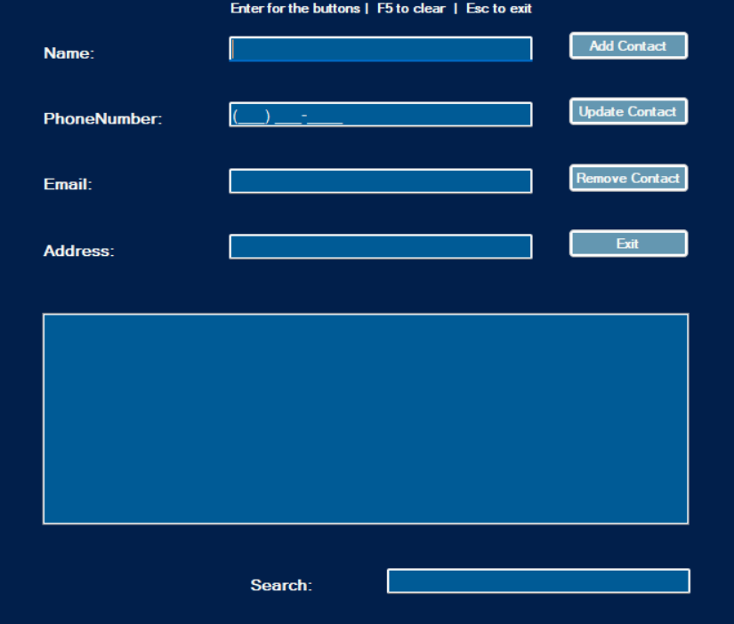
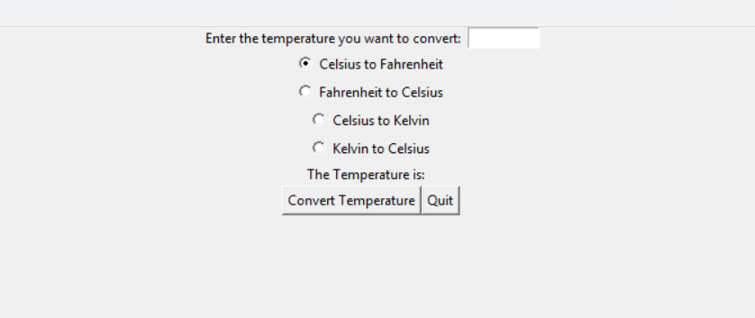

Projects
I chose this project because it gave me hands on experience writing HTML and CSS by hand rather than relying on tools such as Adobe Dreamweaver. I wrote the HTML using Notepad++ and developed the CSS in Visual Studio 2022. The project involved creating a website that provides step by step instructions for making the perfect grilled cheese sandwich in an air fryer. This experience strengthened my understanding of web development fundamentals and improved my ability to build clean, well structured websites entirely by hand.

This project was created in C# using Visual Studio 2022. It uses classes and objects to create a simple contact management program. While working on this project, I had to learn how keyboard shortcuts and key events worked, such as using F5 to clear the form, Esc to close the program, and the Enter key to activate buttons. Although this was challenging at first, it helped me better understand object oriented programming and event handling. Overall, this project strengthened my problem-solving skills and improved my confidence and ability in coding.

This project was built in Python using Visual Studio 2022. It uses the Tkinter library to create a graphical user interface with text boxes and buttons. Since this was my first time building a GUI from scratch, it was challenging at first. Especially understanding how padding and layout spacing work. However, working through those challenges helped me better understand how GUIs are structured and improved my overall problem-solving and coding skills.